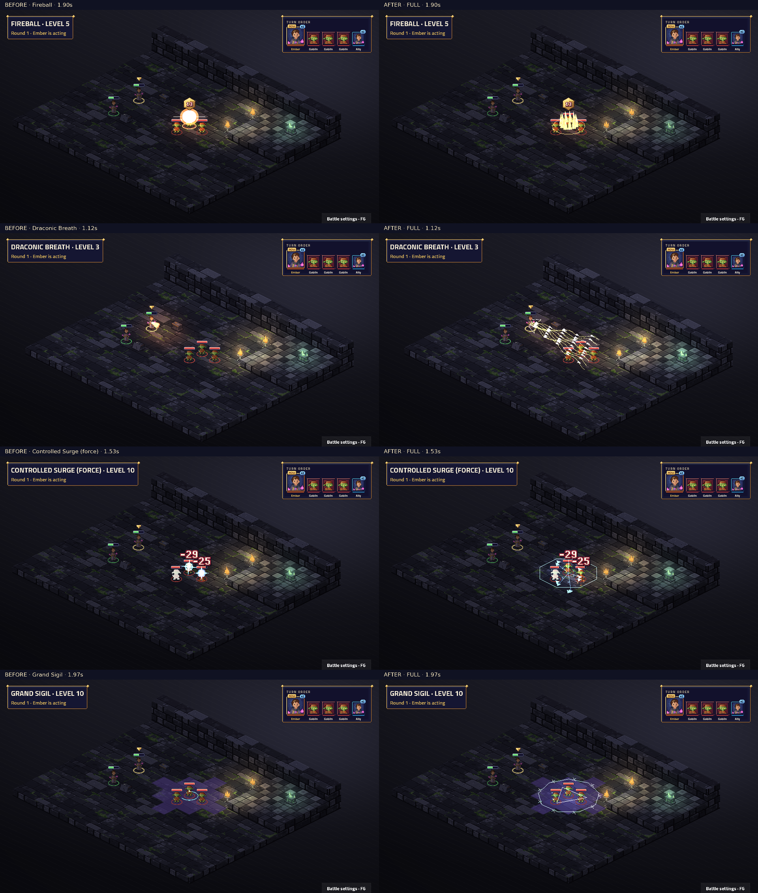

Attack · Level 1
Weapon attack, weapon range: weapon damage
Controlled Surge rolls separately for each target. Surge variant labels identify the first target; the other targets retain their independently rolled outcomes.
Native TV capture: before on the left, after on the right. Fixed map and seed; real engine events and BeatPlayer. Level labels are the character’s unlock level. Videos preserve the complete cast, impact, effect tails and camera settle. Posters align the impact for comparison.
Frozen before: a3c5e0d3ad61e059ff470a9fc0fe7b67c4a45244. Review notes and limitations · Frame measurements · Actual beat timings
Complete 50-sample contact sheet · Native cast close-up

Static modifiers have no standalone proc. Every ability and visible proc must have a real fixture for this capture to succeed.
| Name | Subclass | Level | Kind | Cut-in | Before keys | After keys |
|---|---|---|---|---|---|---|
| Acid Splash | Base class | 1 | ability | none | characters.cast · fx.acid.acid | characters.sorcerer_fling · fx.sorcerer_acid_splash.acid |
| Burning Hands | Base class | 1 | ability | full | characters.summon · signature.draconic_dragon_breath.fire | characters.sorcerer_surge · fx.sorcerer_burning_hands.fire |
| Chill Touch | Base class | 1 | ability | none | characters.point · fx.necrotic.grave | characters.sorcerer_fling · fx.sorcerer_chill_touch.grave |
| Chromatic Orb | Base class | 1 | ability | short | characters.point · fx.shock.storm · projectiles.lightning | characters.sorcerer_fling · fx.sorcerer_chromatic_orb.storm · fx.sorcerer_chromatic_orb_shot.storm |
| Fire Bolt | Base class | 1 | ability | none | characters.point · fx.flames.fire · projectiles.fireball | characters.sorcerer_fling · fx.sorcerer_fire_bolt.fire · fx.sorcerer_fire_bolt_shot.fire |
| Innate Sorcery | Base class | 1 | ability | short | characters.buff · fx.aura.arcane | characters.sorcerer_focus · fx.sorcerer_innate_sorcery.arcane |
| Magic Missile | Base class | 1 | ability | short | characters.point · fx.force.force · projectiles.missile | characters.sorcerer_fling · fx.sorcerer_magic_missile.force · fx.sorcerer_magic_missile_shot.force |
| Poison Spray | Base class | 1 | ability | none | characters.point · fx.toxin.venom | characters.sorcerer_fling · fx.sorcerer_poison_spray.venom |
| Ray of Frost | Base class | 1 | ability | none | characters.point · fx.frost.frost · projectiles.ice | characters.sorcerer_fling · fx.sorcerer_ray_of_frost.frost · fx.sorcerer_ray_of_frost_shot.frost |
| Shield | Base class | 1 | ability | none | characters.block · fx.shield.arcane | characters.sorcerer_focus · fx.sorcerer_shield.arcane |
| Shocking Grasp | Base class | 1 | ability | none | characters.point · fx.shock.storm | characters.sorcerer_fling · fx.sorcerer_shocking_grasp.storm |
| Sleep | Base class | 1 | ability | short | characters.cast · fx.misty.fey | characters.sorcerer_fling · fx.sorcerer_sleep.fey |
| Thunderwave | Base class | 1 | ability | short | characters.cast · fx.thunder.thunder | characters.sorcerer_surge · fx.sorcerer_thunderwave.thunder |
| Font of Magic: Create Mana | Base class | 2 | ability | short | characters.cast · fx.aura.arcane | characters.sorcerer_focus · fx.sorcerer_font_of_magic_mana.arcane |
| Font of Magic: Draw Sorcery | Base class | 2 | ability | short | characters.cast · fx.aura.arcane | characters.sorcerer_focus · fx.sorcerer_font_of_magic_sorcery.psychic |
| Metamagic: Careful Spell | Base class | 2 | ability | short | characters.buff · fx.circle.arcane | characters.sorcerer_focus · fx.sorcerer_metamagic_careful.gold |
| Metamagic: Distant Spell | Base class | 2 | ability | short | characters.buff · fx.circle.arcane | characters.sorcerer_focus · fx.sorcerer_metamagic_distant.force |
| Metamagic: Extended Spell | Base class | 2 | ability | short | characters.buff · fx.circle.arcane | characters.sorcerer_focus · fx.sorcerer_metamagic_extended.arcane |
| Metamagic: Twinned Spell | Base class | 2 | ability | short | characters.buff · fx.circle.arcane | characters.sorcerer_focus · fx.sorcerer_metamagic_twinned.force |
| Hold Person | Base class | 3 | ability | short | characters.cast · fx.hold.arcane | characters.sorcerer_focus · fx.sorcerer_hold_person.arcane |
| Misty Step | Base class | 3 | ability | short | characters.cast · fx.misty.mist | characters.sorcerer_focus · fx.sorcerer_misty_step.mist |
| Scorching Ray | Base class | 3 | ability | short | characters.point · fx.flames.fire · projectiles.fireball | characters.sorcerer_fling · fx.sorcerer_scorching_ray.fire · fx.sorcerer_scorching_ray_shot.fire |
| Shatter | Base class | 3 | ability | full | characters.cast · signature.spell_shatter.thunder | characters.sorcerer_surge · fx.sorcerer_shatter.thunder |
| Web | Base class | 3 | ability | short | characters.channel · fx.web.silk | characters.sorcerer_focus · fx.sorcerer_web.silk |
| Counterspell | Base class | 5 | ability | none | characters.point · fx.dispel.arcane | characters.sorcerer_fling · fx.sorcerer_counterspell.arcane |
| Fireball | Base class | 5 | ability | full | characters.summon · signature.spell_fireball.fire · projectiles.fireball | characters.sorcerer_surge · fx.sorcerer_fireball.fire · fx.sorcerer_fireball_shot.fire |
| Haste | Base class | 5 | ability | full | characters.buff · signature.chronomancer_time_dial.haste | characters.sorcerer_focus · fx.sorcerer_haste.gold |
| Lightning Bolt | Base class | 5 | ability | full | characters.summon · signature.spell_lightning_bolt.storm | characters.sorcerer_surge · fx.sorcerer_lightning_bolt.storm |
| Slow | Base class | 5 | ability | full | characters.summon · signature.chronomancer_time_dial.slow | characters.sorcerer_focus · fx.sorcerer_slow.frost |
| Banishment | Base class | 7 | ability | short | characters.cast · fx.pillar.arcane | characters.sorcerer_focus · fx.sorcerer_banishment.arcane |
| Greater Invisibility | Base class | 7 | ability | short | characters.buff · fx.misty.mist | characters.sorcerer_focus · fx.sorcerer_greater_invisibility.mist |
| Ice Storm | Base class | 7 | ability | short | characters.summon · fx.ice.frost | characters.sorcerer_surge · fx.sorcerer_ice_storm.frost |
| Metamagic: Quickened Spell | Base class | 7 | ability | short | characters.buff · fx.circle.arcane | characters.sorcerer_focus · fx.sorcerer_metamagic_quickened.storm |
| Wall of Fire | Base class | 7 | ability | short | characters.summon · fx.flames.fire | characters.sorcerer_fling · fx.sorcerer_wall_of_fire.fire |
| Cone of Cold | Base class | 9 | ability | full | characters.summon · signature.spell_cone_of_cold.frost | characters.sorcerer_surge · fx.sorcerer_cone_of_cold.frost |
| Hold Monster | Base class | 9 | ability | short | characters.cast · fx.hold.arcane | characters.sorcerer_focus · fx.sorcerer_hold_monster.arcane |
| Tides of Chaos | sorcerer.chaos | 3 | ability | full | characters.buff · signature.chaos_wild_surge.wild | characters.sorcerer_focus · fx.sorcerer_tides_of_chaos.psychic |
| Wild Surge | sorcerer.chaos | 3 | ability | full | characters.point · signature.chaos_wild_surge.wild | characters.sorcerer_fling · fx.sorcerer_wild_surge.force |
| Bend Luck | sorcerer.chaos | 6 | ability | none | characters.block · signature.chaos_wild_surge.wild | characters.sorcerer_focus · fx.sorcerer_bend_luck.psychic |
| Controlled Surge | sorcerer.chaos | 10 | ability | full | characters.summon · signature.chaos_wild_surge.wild | characters.sorcerer_surge · fx.sorcerer_controlled_surge.arcane |
| Draconic Breath | sorcerer.draconic | 3 | ability | full | characters.summon · signature.draconic_dragon_breath.fire | characters.sorcerer_breath · fx.sorcerer_dragon_breath.fire |
| Dragon Scales | sorcerer.draconic | 3 | static | none | No art key | No art key |
| Elemental Affinity | sorcerer.draconic | 6 | proc | none | No art key | fx.sorcerer_elemental_affinity.fire |
| Dragon Wings | sorcerer.draconic | 10 | ability | full | characters.jump · signature.draconic_dragon_breath.fire | characters.sorcerer_surge · fx.sorcerer_dragon_wings.fire |
| Ember Rune | sorcerer.runeborn | 3 | ability | full | characters.channel · signature.runeborn_rune_circle.ember | characters.sorcerer_focus · fx.sorcerer_ember_rune.fire |
| Frost Rune | sorcerer.runeborn | 6 | ability | full | characters.channel · signature.runeborn_rune_circle.teal | characters.sorcerer_focus · fx.sorcerer_frost_rune.frost |
| Runic Ward | sorcerer.runeborn | 6 | static | none | No art key | No art key |
| Grand Sigil | sorcerer.runeborn | 10 | ability | full | characters.summon · signature.runeborn_rune_circle.teal | characters.sorcerer_surge · fx.sorcerer_grand_sigil.arcane |
Weapon attack, weapon range: weapon damage
Dex save, 6 tiles, burst 1: 1d6 acid
Dex save, self, cone 3: 3d6 fire; half damage on a save
Spell attack, 6 tiles: 1d10 necrotic
Spell attack, 6 tiles: 2d8 lightning
Spell attack, 6 tiles: 1d10 fire
Self: you get +1 spell DC and have advantage on your attack rolls for 3 rounds — Your innate magic surges for 3 rounds: +1 spell save DC and advantage on attack rolls.
6 tiles: 3 times: 1d4+1 force
Spell attack, 4 tiles: 1d12 poison
Spell attack, 6 tiles: 1d8 cold; target gets -1 Move for 1 round
Real reaction to Attack; fixture seed 7.
Spell attack, 1 tile: 1d8 lightning
Wis save, 6 tiles, burst 1: target is Unconscious until saved
Con save, self, burst 1: 2d8 thunder; pushes target 1 tile away; half damage on a save
Self: you gain 1 mana
Self: you gain 2 sorcery
Self: allies in the area of your next spell this turn automatically succeed their saves
Self: your next spell this turn has +2 range
Self: doubles the duration of your concentration spell
Self: your next single-target spell this turn also hits a second target in range
6 tiles: if the target is humanoid, Wis save (target is Paralysed until saved)
4 tiles: teleports you to the aimed tile, up to 4 tiles away
6 tiles: 3 times: spell attack (2d6 fire)
Con save, 6 tiles, burst 1: 2d8 thunder; half damage on a save
6 tiles, burst 1: creates a web zone (burst 1) for the battle, difficult terrain, ends if you lose concentration; units inside: When you enter a tile, on yourself: Dex save (target is Restrained until saved); Dex save (target is Restrained until saved)
Real reaction to Fireball; fixture seed 7.
Dex save, 6 tiles, burst 2: 6d6 fire; half damage on a save — Game balance: 6d6 per target instead of SRD 8d6.
4 tiles: target is Hasted for 10 rounds
Dex save, self, line 10: 6d6 lightning; half damage on a save — Game balance: 6d6 per target, matching Fireball.
Wis save, 6 tiles, burst 2: target is Slowed until saved
Cha save, 6 tiles: target is Incapacitated until saved
1 tile: target is Invisible for 10 rounds
6 tiles, burst 2: creates a ice zone (burst 2) for 1 round, difficult terrain; Dex save (2d8 bludgeoning; 4d6 cold; half damage on a save)
Self: your next Action spell this turn costs no Action (uses your Bonus action)
6 tiles, ring 2: creates a fire zone (ring 2) for 10 rounds, ends if you lose concentration; units inside: At the start of your turn, on yourself: Dex save (1d8 fire; half damage on a save); Dex save (5d8 fire; half damage on a save) — Game balance: the initial hit deals 5d8; ongoing damage is 1d8 per turn instead of SRD 5d8.
Con save, self, cone 7: 8d8 cold; half damage on a save
Wis save, 6 tiles: target is Paralysed until saved
Wild Chaos: Self: you get +1 spell DC and have advantage on your attack rolls for 2 rounds
Wild Chaos: 6 tiles: one of, at random: 3d8 force (2 in 5), (3d6 lightning; pushes target 2 tiles away) (2 in 5), (4d6 psychic; target is Slowed for 2 rounds) (1 in 5)
Wild Chaos: Real reaction to Attack; fixture seed 7.
Wild Chaos: 6 tiles, burst 2: one of, at random: (6d8 force; target is Stunned for 1 round) (3 in 5), (5d8 fire; target is Burning for 2 rounds) (2 in 5)
Draconic Bloodline: Dex save, self, cone 3: 3d8 fire; target is Burning for 1 round; half damage on a save
Draconic Bloodline: Visible passive triggered during Fire Bolt. Spell attack, 6 tiles: 1d10 fire
Draconic Bloodline: 5 tiles: leaps to the aimed tile, up to 5 tiles away; target gets +2 AC and +2 Move for 3 rounds
Runeborn: 6 tiles, burst 1: creates a ember rune zone (burst 1) for 3 rounds; units inside: When you enter a tile, on yourself: 2d8 fire; target is Burning for 1 round; Dex save (2d8 fire; half damage on a save)
Runeborn: 6 tiles, burst 1: creates a frost rune zone (burst 1) for 3 rounds, difficult terrain; units inside: When you enter a tile, on yourself: 2d8 cold; target is Slowed for 2 rounds; Con save (2d8 cold; target is Slowed for 2 rounds; half damage on a save)
Runeborn: 6 tiles, burst 2: creates a grand sigil zone (burst 2) for 3 rounds; units inside: When you enter a tile, on yourself: 3d8 force; target is Restrained for 1 round; Dex save (5d8 force; target is Restrained for 1 round; half damage on a save)
6 tiles: one of, at random: 3d8 force (2 in 5), (3d6 lightning; pushes target 2 tiles away) (2 in 5), (4d6 psychic; target is Slowed for 2 rounds) (1 in 5) Random outcome fixture seed 9.
6 tiles: one of, at random: 3d8 force (2 in 5), (3d6 lightning; pushes target 2 tiles away) (2 in 5), (4d6 psychic; target is Slowed for 2 rounds) (1 in 5) Random outcome fixture seed 10.
6 tiles, burst 2: one of, at random: (6d8 force; target is Stunned for 1 round) (3 in 5), (5d8 fire; target is Burning for 2 rounds) (2 in 5) Random outcome fixture seed 9.